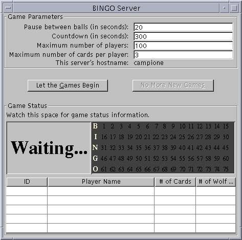
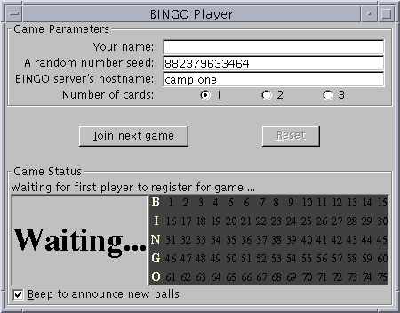
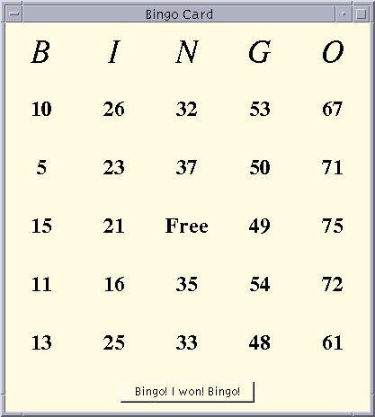
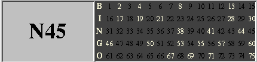

Feedback Form
|
|
Start of Tutorial > Start of Trail > Start of Lesson |
Search
Feedback Form |
To play BINGO by yourself, you need follow all of the steps outlined in this section to run both the Game application and the Player application. The Game application allows many Player applications, running anywhere on your network, to register for games. So, if you wish to play against other people, invite them to play using the Game application that you start. After you've completed steps 1 through 5, all players need to follow steps 6, 7, and 8.Both the Game and the Player applications use Swing components. You can use either JDK 1.2 or JDK 1.1 to compile and run these programs. This section includes instructions for both releases. Using JDK 1.2 is a bit simpler because it already includes the Swing components. If you are using JDK 1.1, you need to add the JFC/Swing release to your JDK release. To do so, follow the steps outlined in Getting Started with Swing
to download the Swing release and to set up your environment. Be sure to set the
JDK_HOMEandSWING_HOMEenvironment variables as described in Platform-Specific Details: Setting Environment VariablesPATHenvironment variable includes the path to thebindirectory of your JDK release.Here are the steps required to build and play BINGO.
More than 50 source files in three directories compose this example. For your convenience, we include a downloadable zip archive that contains all of the source files necessary to build the BINGO Game and Player applications.
Compressed /
UncompressedFTP Download HTTP Download 38 KB / 109 KB tut-bingo.zip tut-bingo.zip After you download and unzip
tut-bingo.zip, you should see a directory namedexample-swingwhose structure is shown in the following figure:example-swing | +-----------+-----------+--------------+---------------+ | | | | bingo bingo.policy chit.gif invisible.gif | +------+--------+ | | | game player shared[PENDING: replace with real, non-ASCII, diagram]
The
game,player, andshareddirectories each contain a number of.javafiles that have not been compiled. Thebingo.policyfile is a security-related file required only by JDK 1.2. The two.giffiles are images that the Player application displays on BINGO cards.
First, compile the sources in thebingo/gameandbingo/playerdirectories usingjavac.
JDK 1.2 on Solaris JDK 1.2 on Win32 JDK 1.1 with Swing on Solaris JDK 1.1 with Swing on Win32 The files in
bingo/sharedget compiled as a side effect of compiling the source files in thebingo/gameandbingo/playerdirectories. So you don't have to compile them explicitly.Next, create the stubs files required by RMI using the
rmicutility program, which lives in the same directory asjavacin the JDK release. The command is the same for JDK 1.2 and JDK 1.1 and for Solaris and Win32.
rmic -d . bingo.game.RegistrarImpl
You need to run a utility program calledrmiregistry, which creates, starts, and manages a registry of remote objects. The Game and the Player applications use remote objects to communicate. Before runningrmiregistry, make sure yourCLASSPATHenvironment variable is not set. Typically,rmiregistryis executed in the background.
Any JDK on Solaris Any JDK on Win32 rmiregistryrunning, you will get an error stating that port 1099 is busy. You can either kill thermiregistryprocess and start a new one or, if no other Game applications are running on your machine, you can just start the game.
Now, run the Game application.
JDK 1.2 JDK 1.1 with Swing on Solaris JDK 1.1 with Swing on Win32 The command for running the Game application under JDK 1.2 specifies a security policy (implemented by a policy file) that grants permissions to the Game application. The policy file we provide, bingo.policy, removes all security restrictions. Such a permissive policy is appropriate only for testing and not for real-world use. Refer to the Security in Java 2 SDK 1.2
Here's a snapshot of the Game application when it first appears on the screen:
 [PENDING: take a new picture, why does the application look so scrunched when run in 1.2?]
This figure has been reduced to fit on the page.
Click the image to view it at its natural size.
To start the games rolling:The Game will continually serve up games until you stop them by clicking the No More New Games button (or kill the Game process). The No More New Games button tells the Game not to start any more games after the current game is finished. Pushing this button will not stop the current game.
- Enter the number of seconds the game should pause between calling balls. If you want a fast game with one card, 3 seconds works well. Add a couple of seconds for each additional card. If many players are playing consider using 10 - 20 seconds.
- After the first player registers, the Game begins a count down. During the countdown period other players can register for this game. After the countdown period expires the game begins and registration closes for this game. Enter how long the countdown period should last. If you're playing alone, use 10 seconds so that there's enough time for your BINGO card to appear on screen.
- Enter the maximum number of players allowed to play in a single game.
- Enter the maximum number of cards each player is allowed to play in a single game.
- Push the Let the Games Begin button.
Now run the Player and instruct your friends to run the Player as well.
JDK 1.2 JDK 1.1 with Swing on Solaris JDK 1.1 with Swing on Win32 Here's a snapshot of the Player application when it first appears on screen:

To join the next game, follow these steps:
- If you want, type in your name.
- If you want, type in a different seed value. This is the value used to generate your BINGO cards. The default value is the value returned from
System.currentTimeMilliswhen the window gets created. You will always play the same cards if you always use the same seed.- Type the name of the computer on your network on which the Game is running. The Player application figures out the name of the host on which the Player application is running and enters this name in the host name text field. If you are running your own Game then you can just leave this value as is. If you want to play with a Game running on another machine, type the name of that machine into the text field.
- Choose the number of cards you'd like to play.
- Click the Join the Next Game button.
If you're running a Game then you should see your name appear in the player list.
After a time, you will see one of these windows for each card you requested.

Periodically, the Game announces a BINGO ball. The current ball is displayed on the left side of the player's light board. The right side shows all of the balls that have been called in this game thus far. Mark the numbers on your card as the balls are called. When you have 5 adjacent numbers marked horizontally, vertically or diagonally, push the Bingo! I Won! Bingo! button.If you really won, the Game will stop the current game, and tell you that you've won. If not, the current game continues until somebody wins, or until the balls run out.
But wait! Don't push the Bingo! I Won! Bingo! button too often. If you "cry wolf" (push the Bingo! I Won! Bingo! button and don't have a winning card) three times, you're kicked out of the game. After all, that's very disruptive to the other players!
|
|
Start of Tutorial > Start of Trail > Start of Lesson |
Search
Feedback Form |